|
LAGOA DO JAPIÍM –
PRIMEIRA FASE NA RETA FINAL
Após um período
de chuvas completamente atípico, que manteve a cidade de Manaus
encharcada durante vários meses, e prejudicou bastante o setor da
construção civil, a Fergel aproveitou com eficiência o sol
manauense nos últimos três meses. Por isso, quem tem passado em
frente a Lagoa do Japiím neste mês de outubro, pode conferir o
incremento do ritmo das obras que encerrarão a primeira fase da
construção da parque.
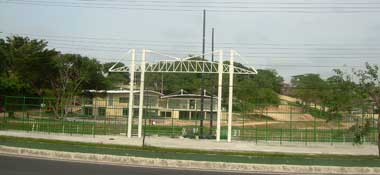
Pórtico da entrada da
Lagoa e aspecto geral da obra.
|
|
|
|
|
 |
|
|
|
|
|
|
|
SISTEMA DE COLETA
DE ÁGUAS SERVIDAS VAI FAZER A DIFERENÇA
A segunda etapa
das obras corresponde a área de lazer comunitário, onde serão
construídas as quadras polivalentes e parte do circuito de
caminhadas. Esta segunda etapa envolve intenso e pesado serviço de
terraplenagem e instalação de sistemas de drenagem da rede de
coleta de águas servidas de toda a comunidade do entorno do
parque. A obra exigiu muito nivelamento e preparação do solo, uma
área que se tornou ainda mais encharcada, em razão do intenso
volume de águas servidas que eram despejadas no terreno somadas ao
do lençol freático da área. A Fergel têm seguido a risca todas as
orientações do projeto original, assim como as adequações exigidas
pela empresa que desenvolveu o projeto.
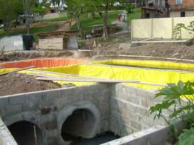
Tanques do complexo da
ETEE - Sistema de tratamento Ecólogico de Esgoto.
|
|
|
|
|
|
|
|
PRIMEIRA ETAPA OK!,
Da primeira
etapa, já estão em fase de acabamento todos os prédios reservados
para os setores administrativos e de serviços que serão utilizados
pela comunidade, como banco, restaurantes e de assistência social.
Também já está em acabamento, o projeto paisagístico do parque. As
margens da lagoa estão sendo gramadas e os devidos retoques de
pintura e limpeza em estado adiantado.
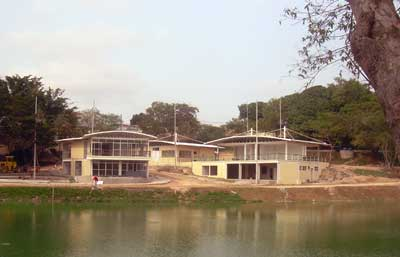
Aspecto geral das
edificações da área administrativa e de serviço do Parque Lagoa do
Japiím.
|
| |
|
|
DECK DE ENTRADA
NA LAGOA
Logo na entrada
do parque já é possível verificar o serviço que a Fergel está
executando, seguindo a risca a idéia do projetista. Um deck
suspenso como mirante sobre as águas da lagoa. Construído em uma
estrutura de aço concretado sobre pilares estaqueados formam uma
pequena praça na entrada.
A Fergel está
muito satisfeita por ter a oportunidade de executar as obras de
construção do parque Lagoa do Japiím. Poder apresentar à sociedade
as características de esmero, dedicação e qualidade em seus
serviços.
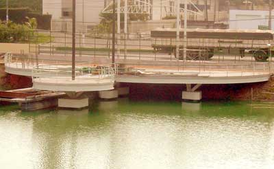
Obras do deck de
entrada panorâmico do parque. |
| |
|
|
QUADRA DE
ESPORTES DA PRAÇA 14
As obras da
construção da quadra de esportes da praça 14 estão em ritmo
acelerado. Toda a cobertura em estrutura metálica foi instalada e
agora transcorrem as obras de construção civil em alvenaria para a
construção dos banheiros, vestiários e administração da quadra. A
Fergel espera entregar a obra neste mês de novembro. |
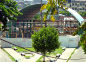
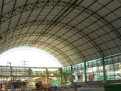
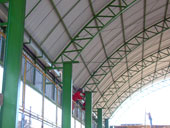

Estruturas metálicas
instaladas e fechamentos civis em fase final na quadra de esportes
da Praça 14. |
| |
|
| |
|
|
15 MIL QUILOS DE ESTRUTURA METÁLICA
É aproximadamente o quanto pesa a
estrutura metálica que a a Fergel fabricou e instalou como parte
da sustentação da fachada do edifício 6 andares da Íris
Empreendimentos no bairro Nossa Senhora das Graças.
A estrutura gigantesca é parte de um
projeto arquitetônico que prevê a instalação de um painel de vidro
diagonalizado e sustentado na estrutura metálica que terá duas
torres laterais fechadas com alucobond.
A operação de logística para a
finalização da instalação das torres ocorreu durante um dia
completo. As fotos ao lado apresentam parte da estrutura metálica
montada que vai servir para a sustentação. |
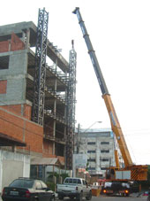
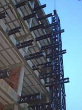
Momento da operação de
instalação das torres de estrutura metálica do prédio da Iris
empreendimento. E detalhe do complexo de 15 mil quilos que está
sendo preparado pela Fergel. |
| |
|
|
|
| |
| |
|
|
PRÉDIOS DA UFAM
NO ACABAMENTO
A Fergel já
entregou a etapa de obras civis pesadas dos prédios de estatística
e matemática da Universidade Federal do Amazonas. A obra que foi
iniciada em pleno período de chuvas, sofreu percalços de tempo
consideráveis. Contudo, tão logo as chuvas escassearam, a Fergel
tocou a toda força diversas etapas que ainda estavam
comprometidas, como parte das fundações. Durante esse tempo, a
indústria Fergel fabricou todas as estruturas necessárias para as
coberturas dos prédios. A fase atual é de colocação de pisos,
esquadrias, divisórias, ferragens etc.
|
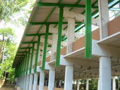
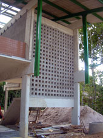
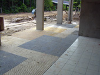
Obras civis
entregues e prédios da UFAM em fase de acabamento. |
| |
|
| |
|
|
COLETORES DE
RESÍDUOS
A linha de
produção da Fergel está há mil por hora. Estão sendo fabricados
vinte coletores de resíduos industriais em duas etapas. O nível de
conscientização nas indústrias do distrito quanto a questão
ambiental tem aumentado bastante. A Fergel têm atendido, cada vez
mais, as necessidades do empresariado local para o fornecimento de
coletores de resíduos com qualidade e acabamento de primeira.
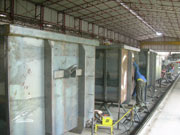
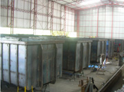
Linha de montagem da
Fergel para a produção de coletores industriais. |
 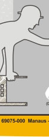
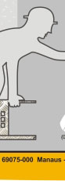